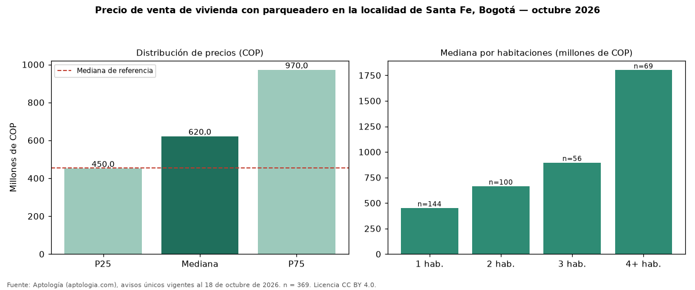

Precio de venta de vivienda con parqueadero en la localidad de Santa Fe, Bogotá — octubre 2026
Con 369 avisos únicos, el precio mediano de vivienda con parqueadero en venta en la localidad de Santa Fe, Bogotá es COP 620 millones. Eso es 36 % más que la mediana de toda la oferta de venta en la localidad de Santa Fe, Bogotá (COP 455 millones). Frente a los avisos sin parqueadero del mismo grupo (COP 332 millones, n = 219), la diferencia es de +87 %; por metro cuadrado, −1 %. En todo Bogotá, la misma combinación tiene mediana COP 1,05 mil millones (−41 %). Por metro cuadrado, la mediana es COP 9.043.105/m² (+3 % frente a COP 8.802.320/m²), puesto 3 de 19 localidades comparables. Cruzando con la oferta de arriendo equivalente, la rentabilidad bruta implícita es 7,5 % anual. El rango intercuartílico va de COP 450 millones a COP 970 millones (razón 2,2). Datos abiertos CC BY 4.0 de Aptología; fuente y búsqueda de inmuebles: https://www.aptologia.com/venta/bogota/santa-fe. Archivos: PDF de 2 páginas, CSV con las cifras y gráfica PNG.

| Avisos únicos | 369 |
|---|---|
| Percentil 25 | COP 450.000.000 |
| Mediana | COP 620.000.000 |
| Percentil 75 | COP 970.000.000 |
| Mediana por m² | COP 9.043.104 |
Fuente: avisos vigentes de portales inmobiliarios recopilados por Aptología, deduplicados (mínimo 30 avisos únicos por celda). Precios pedidos, no cerrados. Fecha: 2026-10-18.